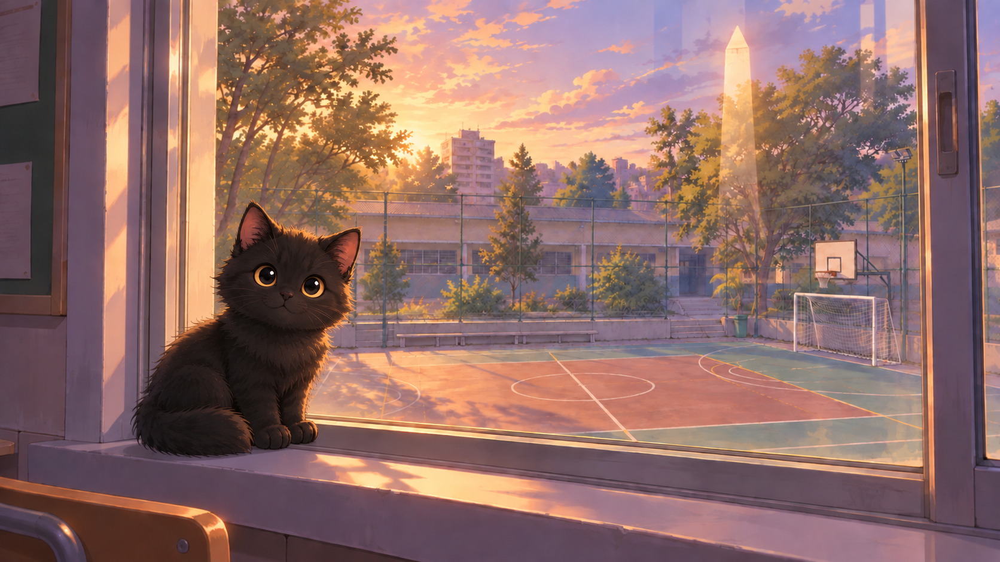
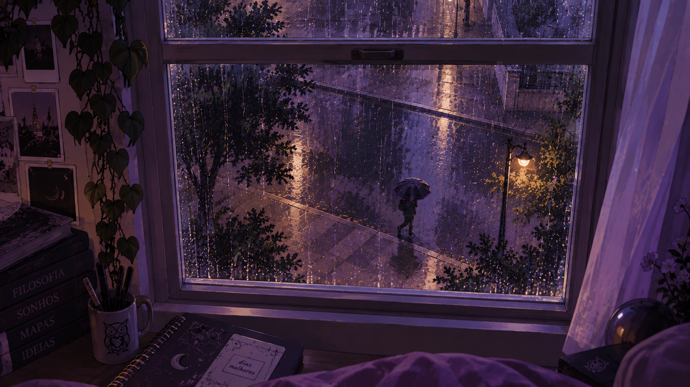
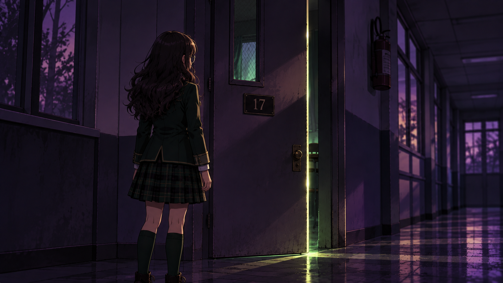
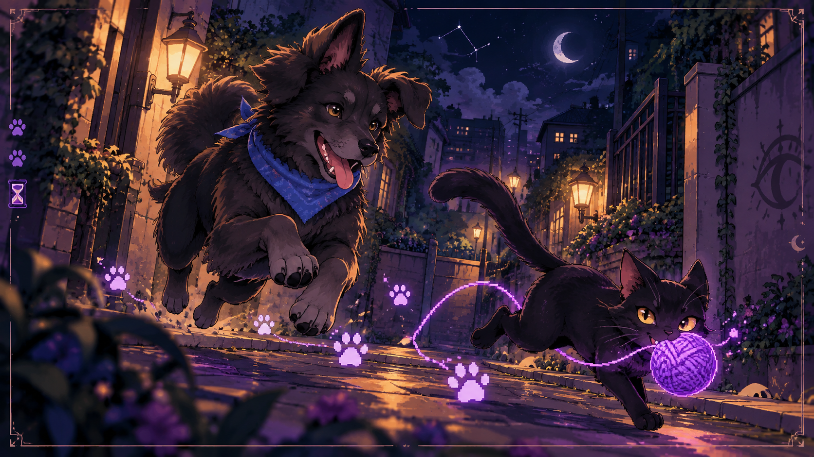
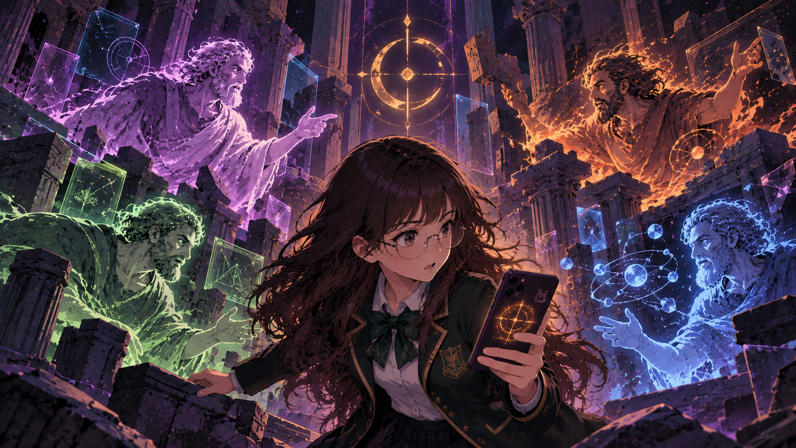
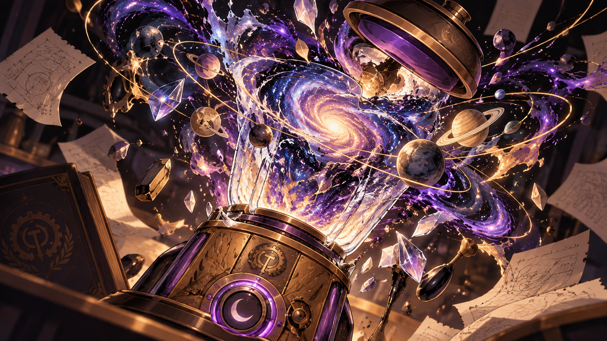

01depois do último sinal
Sala 17
Sofia entra na sala e encontra uma janela impossível e uma carta incompleta.
ler anotaçãoarquivo 02
eu só queria descobrir o que tinha na sala 17.
ocorrências registradas
A Sala 17 foi só o começo. O número continuou aparecendo.

01depois do último sinal
Sofia entra na sala e encontra uma janela impossível e uma carta incompleta.
ler anotação
02aula de Ciências
A previsão dizia céu limpo. A página dizia outra coisa.
ler anotação
0321:17
Sofia atende ao convite e descobre que encontrar respostas não é o mesmo que saber escolhê-las.
ler anotaçãodepois da iniciação
Sofia pesquisa nomes, organiza lembranças e separa pistas de respostas.
ler anotação
05tarde demais
Quase foge de novo. Vírgula tem um novelo, a cidade tem pegadas luminosas e Téo tem perguntas demais.
seguir as pegadas
06num horário que não existe
Um aplicativo que Sofia não instalou transforma quatro explicações da realidade em confronto.
abrir o ARCHÉ
07previsão de entrega: agora
Uma encomenda sem remetente propõe duas maneiras de explicar o universo.
abrir a encomenda 08
08antes da partida
Um barco avariado, uma capitã misteriosa e uma travessia rumo a Atenas.
ir até o cais